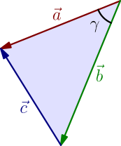
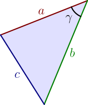
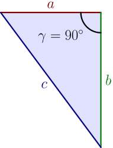
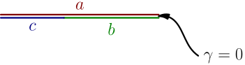

Law of Cosines¶
Let $\vec a$, $\vec b$ and $\vec c$ be the vectors connecting the corners of any triangle so that $\vec a$ and $\vec b$ are pointing away from the same triangle corner. Let $\gamma$ be the angle at that triangle corner.

In the above picture, $-\vec b$ goes from the bottom corner to the top right corner, so $$ \vec c = (-\vec b) + \vec a = \vec a - \vec b. $$ We know that if $a$ and $b$ are numbers, then $$ (a-b)^2 = a^2 - 2ab + b^2, $$ and for deriving that (TODO), we only needed $(a-b)c=ac-bc$ and $ab=ba$. These also work with dot product of vectors instead of multiplication of numbers (see this and this), so the $(a-b)^2$ formula works if $a$ and $b$ are vectors and we replace all multiplications with dot products: $$ (\vec a - \vec b)\cdot(\vec a - \vec b) = (\vec a\cdot\vec a) - 2(\vec a\cdot\vec b) + (\vec b \cdot \vec b) $$ By putting everything together, we get $$ \vec c \cdot \vec c = (\vec a\cdot\vec a) - 2(\vec a\cdot\vec b) + (\vec b \cdot \vec b). $$ Because $\vec a \cdot \vec a = |\vec a|^2$ (see here) and similarly for all other vectors, we have $$ |\vec c|^2 = |\vec a|^2 - 2(\vec a \cdot \vec b) + |\vec b|^2. $$ We can write the dot product with angle between vectors to get $$ \vec a \cdot \vec b = |\vec a| |\vec b| \cos(\gamma). $$ By plugging this in we get $$ |\vec c|^2 = |\vec a|^2 + |\vec b|^2 - 2|\vec a||\vec b|\cos(\gamma). $$ Finally, we can define $a = |\vec a|$ and similarly for $b$ and $c$. These are the side lengths of the triangle.

Let $a$, $b$ and $c$ be the sides of any triangle, and let $\gamma$ be the angle opposite to $c$. Then $$ c^2 = a^2 + b^2 - 2ab\cos(\gamma). $$ This is known as the law of cosines.
We get other well-known things as special cases.
Pythagorean theorem¶
If $\gamma = 90^\circ$, then $\cos(\gamma) = 0$ and $$ c^2 = a^2 + b^2. $$ This is the Pythagorean theorem.

Alternatively, you can go back to the law of cosines derivation and use the fact that if $\vec a$ and $\vec b$ are perpendicular, then $\vec a \cdot \vec b = 0$.
$(a-b)^2$ for numbers¶
If $\gamma = 0$, then the triangle is flat, and it's a bit questionable whether we can still call it a triangle.

The above derivation still works, and because $\cos(0)=1$, we get $$ c^2 = a^2 + b^2 - 2ab. $$ In the picture, $a$ is longer than $b$ so we have $c = a-b$. If $b$ was longer than $a$, then we would instead have $c = b-a$. Either way, we have $c = \abs{a-b}$ and $$ c^2 = \abs{a-b}^2 = (a-b)^2. $$ By putting all this together, we get $$ (a-b)^2 = a^2 - 2ab + b^2, $$ which is the formula that we used (and generalized) earlier on this page.